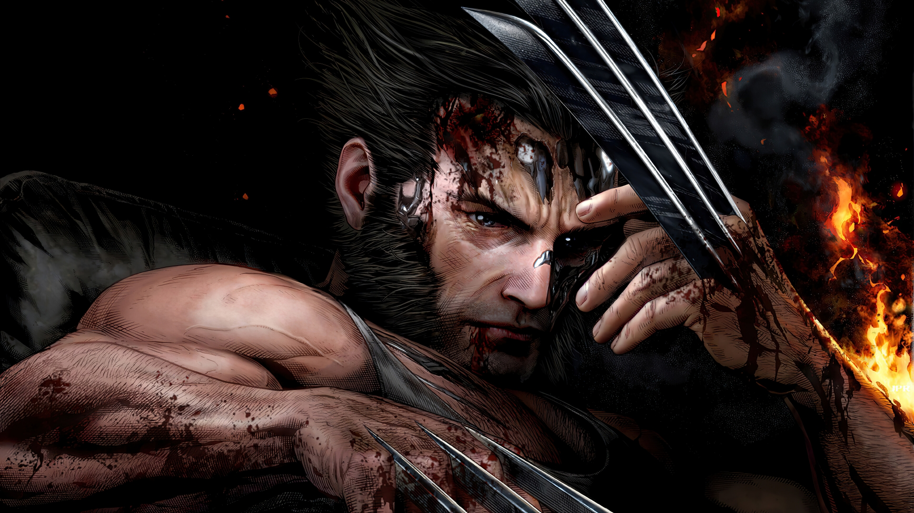

Wolverine fue el tercer mutante conocido en nacer, después de su medio hermano Dientes de
Sable y siendo el primero Apocalipsis.
Logan es el líder de los X-Men que perdió su memoria por culpa del programa Arma X y desde
entonces ha tratado de recuperarla integrando el grupo de los X-Men dirigido por el Profesor
Charles Xavier para proteger a la humanidad de los mutantes malignos.
Wolverine y el nuevo Milenio...
Wolverine ha sido interpretado por el actor australiano Hugh Jackman en la trilogía clásica de
los X-Men de 2000 hasta 2006.En 2009 20th Century Fox, en asociación con Marvel Studios, lanzó
una película individual de Wolverine que fue la primera película spin-off de X-Men, titulada
X-Men Origins: Wolverine, con Jackman regresando como el personaje protagonista, lanzada en América
del Norte
el 1 de mayo de 2009. Troye Sivan interpreta la versión infantil de Wolverine (James Howlett).
La película muestra el origen de Wolverine, un niño enfermizo en el siglo XIX en Canadá el cual
descubre que es un mutante y se une al ejército con su medio hermano Victor Creed / Sabretooth,
los dos gradualmente se hacen enemigos. El actor a esta interpretando al personaje de Marvel
hasta su última apariciónm en 2017, en Logan y 2018, en un cameo de la película de Deadpool.
Retiro de Wolverine...

Pocos superhéroes han quedado tan asociados a un actor como Wolverine y Hugh Jackman. El actor
se metió por primera vez en la piel del personaje para 'X-Men' y se despidió de forma
definitiva del mismo en 2017 con 'Logan', poniendo las cosas muy difíciles al intérprete al que
acabe reemplazandolo.
Regreso en el Multiverso
La nueva fase de el Universo Cinemático de Marvel aparentemente apunta a una nueva
configuración
de los X-Men, pero con el nuevo hecho de los multiversos ahora todas las opciones están abiertas
y el límite parece la imaginación. Por lo que ha trascendido Hugh Jackman no sería el único que
volvería a representar su rol.
También en la lista de pretendidos por Feige se encuentran Tobey Maguire y Andrew Garfield para
interpretar sus respectivas versiones de Spider-Man. Todo esto es posible gracias a los
múltiples universos; de hecho la película de Marvel donde harían sus apariciones se llama
"Doctor Strange in the Multiverse of Madness".